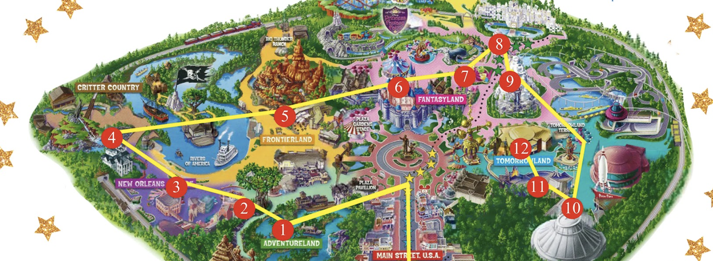

Optimal Route Planning at Disneyland
Skills: Ad-hoc Analysis, Python, Data Wrangling and Cleaning
Objectives: Would there be a possible 1-day plan at California Disneyland where you do not have to wait for a very long time just for 1 ride? This analyis would explore at the shortest route to follow to reduce wait time by looking historical wait time data.
Approach: It is assumed that visitors can visit at least 6 attractions from 6 different lands in one day starting from 8AM to 12AM. Knowing the average wait time for each ride at a given time, we will develope a model in finding the most optimal route based on time of the day to reduce wait time.
Result: The analysis has yielded interesting results as optimal routes for a one day trip at Disneyland do exist under the assumption that there will visit at least 6 different popular attractions from different land. This certainly supports our initial hypothesis that a new Disney planninng can reduce the average wait time compared to the conventional guide. By following these optimal routes, visitors can potentially avoid crowds and save an average of 1.5 hours, which can be spent on other attractions.